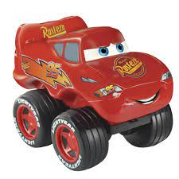

Como fazer um comentário dentro do html, que é usando os seguinte comandos <!-- comente aqui -->, ou leia o
código para ver que o comentário feito não está aparecendo na página.
Atributos Globais
class
conteteditable
data
hiden
id
style
tabindex
title
TABindex
Tabindex serve para dar ordem ao tab 1,2,3
TAG <p> e <br>
Para sinalizar que é um parágrafo só e nada mais, usamos a tag P mas ela é uma tag que abre
e tem que ser
fechada, e após fechada automaticamente ela pula para a próxima linha no navegador
ex: <p> texto</p>
A tag <br>é usada para simplesmente pular linha e não tem que fechar
Um belo exemplo da quebra de linha está abaixo
testado fator br como quebra a linha em um dois
tres pedaços
Tags strong, em ou i
A tag <strong> </strong> da importância a palavra, e deixando em negrito
A tag <i> </i> deixa a palavra em itálico
A tag <em> deixa em itálico e da importância a palavra
HR DO EXERCICO
o exercicio em si pedi para que nós demos ênfase e importância para algumas palavras, e que
adicione
um link do google
Caracteres Reservados
Um dos caracteres reservados (especiais). mais usados
Por isso esses caracteres reservados, porque caracteres iguais aspas, sinal de maior ou menor, ou até mesmo
espaços na
própria linha
é sinal que não pode ser usado porque pode confundir a linguagem de programação html.
Mostrei como
expressar um código sem confundir a programação html usando o xmp "deixando bem claro que xmp é uma
linguagem velha e vai deixar de ser usada ".
Tag <abbr title> </abbr>
O uso da tag abbr é feita para mostrar que uma palavra tem algo por trás na hora que passa o mouse por cima
ex:
Se parar o mouse na palavra mouse vai ver o ex.
Aprendendo sobre hiperlinks
Aprendendo um pouco sobre a tag < a > que significa 'âncora' e usando ela junto com href
pode chamar uma url ou até mesmo um arquivo no diretório, um bom ex:
E juntando com target="_blank" quando clicar no link irar abrir uma nova guia, ao
invés de sair da página atual e ir para a página direcionada, mas se o site for seu mesmo para onde ela for ser
direcionado, e rel="external" para se referir que é uma url externa,
Obs: Nâo é legal por o target=_blank para não poluir muito o navegador e ter várias páginas abertas do
mesmo site
Chamando outros Arquivos(paginas do site)
Para puxar outra pagina ou outro arquivo uso ancora(a)com o href
<a href="../Aprendendo css/curso css.html">para chamar o arquivo curso css</a>
Imagem
Algo importante é sobre o tamanho das imagens quanto maior mais kB ela tem, ou seja mais pesada no
servidor, ocupando mais espaço, uma forma para se resolver isso é reduzindo o tamanho manualmente tipo
no foto photoshop.
Imagens png costumam ser de fundo transparente ótimas para usar em um site. exemplo a imagem abaixo.
Sobre a tag de Imagem pode ser usada de varias formar um ex:
<img src="./imagens/carros imagesn.webp" width="10%" alt="imagen do maquin">
Observe que usei a tag src para chamar a imagem (de um diretório)mas também posso depois de src por a url
da img, e o width para dar proporção ao tamanho da imagem, porém
se eu
usar width 20 ele dá um valor, e se eu usar width 20% é outro valor. veja abaixo.
Aqui foi um exemplo dos valores da width

w
Centralizando texto e img
Eu uso a tag + o parâmetro (style) junto depois a propriedade (text-align) e logo em
seguida o valor (center) para escolher a posição, que eu quero na página.
e uso junto a tag style seguida de color para por a cor .
<div style="color: blue;text-align: center;">Centralizando texto e img </div>
TABELAS
Produtos Vendidos na mercearia
produto Vendidos
produto vendido
Ana
Luiz
Feijão
50
60
obs: no codigo coloquei umas obs intereçantes sobre a tabela, sendo que faltou o fator TH ROWSPAN
=
"2 ", isso é um comando dizendo ocupe duas linhas, e o COLSPAN msm coisa ocupe X coluna.
a tag table seguida de aling center centralisa a tabela
NO HTML
<table align="center"></table>
NO css
table {
margin: auto
}